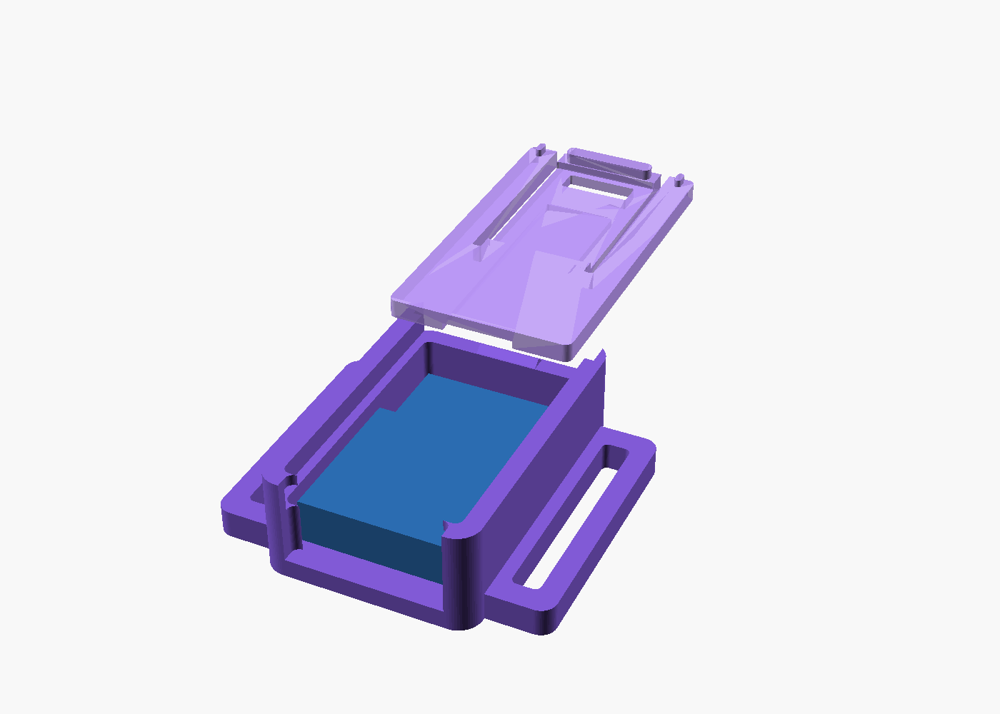

WristTap v2: the band you can wear
Every part now lives inside a printed shell. Nothing dangles, the lids slide open for fixes, and with a power bank on top the band talks to the Mac over Bluetooth or Wi-Fi. No soldering needed.


1. Every component and where it goes
| Component | Qty | Goes in | Notes |
|---|---|---|---|
| ESP32 DevKit (30 pin) | 1 | Forearm box, elbow end, raised on two rests | Pins point down, jumper plugs hang under it. USB port faces the side hole (power-bank cable). |
| Half breadboard (400 point) | 1 | Forearm box, wrist end (pocket on the floor) | Stick it down with its own adhesive back or foam tape. All 10 resistors stay on it. |
| Second breadboard | 0 | Not used any more | Its wires move to board 1 (section 4). Keep it as a spare. |
| MPU6050 #1 | 1 | Forearm box, standing on edge in the side channel next to the ESP32 | Foam tape on its back, onto the wall. Plugs point towards the wrist. Measures the forearm. |
| MPU6050 #2 | 1 | Hand shell, back of the hand | Lies flat on the two rails, tape underneath, ribbon out the wrist end. Measures the hand. MPU #2 minus MPU #1 = wrist bend. |
| Piezo discs | 4 | 4 piezo pods on the wrist strap: top, thumb side, inside, little-finger side | Brass side faces the skin. A small loop of tape on the rim holds each disc in its seat. Wires run along the groove. |
| FSR 402 | 2 | 2 FSR pods on the forearm strap, inner forearm (palm side) | Pad faces the skin, tail runs out of the channel. Gripping or pinching bulges the forearm muscles = squeeze signal. |
| Resistors 10 kΩ ×6, 1 MΩ ×4 | 10 | On the breadboard, exactly where they are now | Nothing changes. |
| Power bank (small, USB) | 1 | On top of the box lid, held by a strap through the 2 tunnels | Short micro-USB cable into the side hole. Or keep it in a pocket with a longer cable. |
| Velcro / elastic straps 25 mm | 4 | Wrist (pods) · forearm (box + FSR pods) · hand (shell) · power bank | You have 2. For the other 2, use velcro cable ties, elastic + safety pin, or hair ties for the power bank. |
| Small zip ties | 2–3 | Lug outside the wrist end of the box | Tie the wire bundle to the lug so a tug never pulls a wire out of the breadboard. |
Inside the forearm box (top view)
Sizes
| Part | Outside size (mm) | |
|---|---|---|
| Forearm box + lid | 69 × 120 × 38 (with tunnels) | All on one plate: 3 h 40 min, 118 g PLA, no supportscad/print/v2_all_parts.3mf |
| Hand shell + lid | 27 × 40 × 13 | |
| Piezo pod ×4 | 31 × 31 × 9.5 | |
| FSR pod ×2 | 23 × 31 × 8 | |
| Fit test (optional, first) | 118 × 70 |
2. Print
- Optional, 28 min: open
cad/print/v2_fit_test.3mfin Bambu Studio → Print. Check: disc drops in, FSR pad drops in, MPU drops in, strap slides through the slot, ESP32 drops between the two posts. If anything is tight, tell me and I'll raise the tolerance (1 minute). - Open
cad/print/v2_all_parts.3mf→ Print. All 10 parts, no supports. - While it prints: do section 4 (one breadboard) and test with
./check.sh.
cad/config.scad): breadboard 82.5 × 54.5 mm, ESP32 51.5 × 28.3 mm, MPU 21.2 × 16.4 mm, disc 27 mm, FSR pad 18.5 mm, strap 25 mm. If one of yours is different, send me the number and I'll re-slice.3. How it goes on your arm

- Box: forearm strap goes under the box through the 4 side slots, about 2 cm behind the wrist bone. Thread the 2 FSR pods onto the same strap so they sit on the inner forearm.
- Wrist strap: thread the 4 piezo pods on (strap goes through the tunnel on each pod's back). Discs face the skin: top, thumb side, inside, little-finger side.
- Hand shell: strap round the palm through the two side slots, shell on the back of the hand, ribbon pointing to the wrist.
- Route all wires to the box's wrist-end notch, zip-tie the bundle to the lug, slide the lid on from the elbow end until it clicks. To open: lift the little tongue at the elbow end and slide.
4. One breadboard instead of two (no solder)
Board 1 keeps its piezo, FSR and resistor wiring as it is. Only the MPU wires and their 3V3/GND/SDA/SCL links move onto board 1, into the rows the build guide always planned for them. Unplug USB before moving any wire.
| Wire | Breadboard hole | Then (already in the guide) |
|---|---|---|
| MPU #1 AD0 | a4 | b4 → blue line 13 |
| MPU #1 SDA | a7 | ESP32 D21 → c7 |
| MPU #1 SCL | a8 | ESP32 D22 → c8 |
| MPU #1 GND | a9 | b9 → blue line 11 |
| MPU #1 VCC | a10 | b10 → red line 11 |
| MPU #2 AD0 | a15 | b15 → red line 13 |
| MPU #2 SDA | a18 | b18 → d7 |
| MPU #2 SCL | a19 | b19 → e8 |
| MPU #2 GND | a20 | b20 → blue line 22 |
| MPU #2 VCC | a21 | b21 → red line 22 |
./check.sh should show IMU1 ≈ 1 g and IMU2 ≈ 1 g.5. Wireless
Bluetooth tested: 100 packets/s, 0 dropped
./check.sh --ble # live numbers ./demo.sh --ble # the demo
Plug the power bank into the ESP32, wait 5 s, run it. The Mac finds the band named "WristTap" by itself.
Wi-Fi flashed, not tested yet
Right now the band makes its own network: WristTap, password wristtap1. Join it from the Mac's Wi-Fi menu (no internet while joined), then:
./check.sh --wifi # expect about 500 packets/s ./demo.sh --wifi
To use your home or college Wi-Fi instead (keeps the Mac's internet): copy firmware/wristtap/secrets.example.h to secrets.h, type the network name and password, then run ./flash.sh. Campus networks with a login page won't work; a phone hotspot will.
6. The demo
./demo.sh --ble
Safari opens localhost:8791 and shows:
- Arm, live: 3D forearm and hand that copy yours, plus the wrist-bend angle.
- Gestures: tap and double tap (shows which disc), squeeze (FSRs), flick up/down/left/right, roll left/right.
- Air mouse: press the button and point your hand to move the cursor. Tapping a disc clicks. Your trackpad keeps working the whole time. If the cursor moves the wrong way, use the axis menus or the flip buttons. The first time, macOS asks to allow your terminal under Accessibility.
Demo-day checklist
- Charge the power bank tonight.
- Rehearse: put the band on, run
./demo.sh --ble, set the air-mouse axes, and set the tap threshold so ordinary hand movement doesn't count as a tap. - Pack a spare: the USB cable. If Bluetooth acts up, plug in and run
./demo.sh. Same demo. - Keep the demo order short: arm copies you → tap each disc → squeeze → flick → air mouse opening a file.